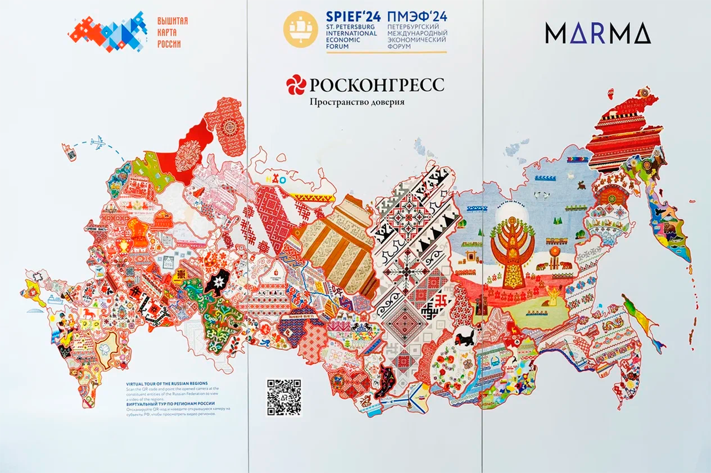

Многоуровневый список фактов
- Культурное многообразие
- ✦ В России проживают представители более 190 народов.
- ✦ Региональные фестивали знакомят жителей с традициями соседних народов.
- Традиции и быт
- Народные ремесла сохраняются через мастер-классы и музеи.
- Национальные кухни становятся частью гастрономических праздников.
- Музыкальные и танцевальные традиции передаются между поколениями.
- Современные инициативы
- Образовательные программы по межкультурному диалогу.
- Грантовая поддержка языковых и фольклорных проектов.
- Цифровые архивы этнографических материалов.
Наведите на слово подсказка.
Карта-изображение
Нажмите на выделенные области карты или используйте обычные ссылки.

Карелы
Ханты
Эвенки
Таблица народов России
| Народ |
Регион проживания |
Культурный вклад |
| Татары |
Поволжье |
Языковое и музыкальное наследие |
| Чуваши |
Чувашская Республика |
Фольклор и орнаментальная традиция |
| Башкиры |
Башкортостан |
Эпос, ремесла и коневодство |